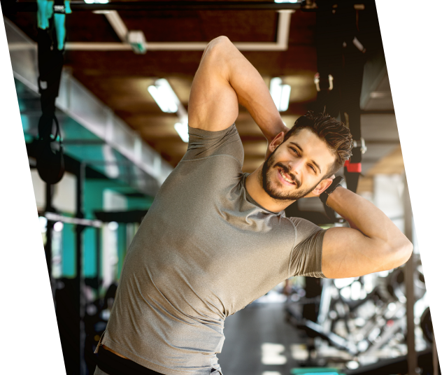

As our Pilates instructor, Lauren’s wish for clients is to approach their fitness journey as a way to appreciate and care for their body from a place of love and respect rather than trying to fix something “wrong” or punishment for eating. It’s a way of life, rather than a quick fix. It is a lifetime commitment. Lauren chose Pilates for it does not have one discipline, but multiple, including flexibility, balance, and strength. Outside of the studio, she shares her life with her husband and two daughters. She loves her neighborhood farmer’s market, dinner parties, and spending time outdoors.

Fitness has always been an important part of Alan’s life. Growing up playing every sport you can imagine, he finally set his sights on football and baseball. Born and raised in Alpharetta, graduating from Milton High School in 2009 where he played football and baseball, and he grew to realize the physical and mental benefits of keeping myself in an effective workout routine. Once I began working out and eating a balanced diet, he wanted to help others achieve their goals for fitness and health. After graduating from the University of Alabama, with certification through AAAI/ISMA, Alan started working at ROYCE in 2013 and now work part time, while building his real estate career.
Cat is originally from Pittsburgh, Pennsylvania, where her love of fitness began as a competitive gymnast and dancer. She continued to dance in the Vassar Repertory Dance Theater at Vassar College where she graduated with a B.A. in Biology. Cat is thrilled to be able to merge her love of fitness and her medical knowledge to help a variety of clients through fitness. It was always her dream to own a business. Frank and Cat passion for health and career becomes a unifying bond as life and business partner. They consider themselves the Obamas of fitness. Cat also enjoy writing and cooking. Check out the blog to taste her tested masterpieces.
Growing up fitness and sports played a huge role in Frank’s life. He brings that competitive drive and team spirit to everything he does. However, at age 22, he tipped the scale at almost 250 pound after an injury that put him on bed rest for six months. Overweight and unhealthy, Frank can truly empathize with clients who are struggling. But he’s also proof that you can exceed your goals and help improve the quality of your life physically and mentally, no matter what condition you’re in. When you’re sweating weekly with him at ROYCE studio, you’ll feel this energy. Frank will support you with his knowledge of fitness training as he pushes you to your limits. TEAM on three!